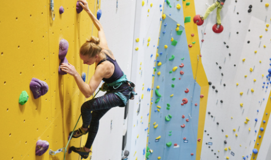
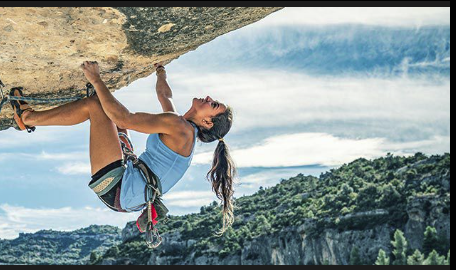
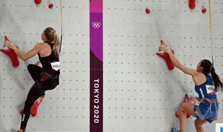

Kletter- und Boulderhallen, Etablierung von Wettkämpfen
Einen Boom erlebte Klettern durch die Einführung von Kletter- und Boulderhallen in den letzten
20 Jahren, 2021 gab es bereits 535 Boulder- und Kletterhallen alleine in Deutschland.
Besonders großen Zuwachs hat im gleichen Zeitraum das Bouldern erlebt, hier hat sich die
Anzahl der ktiven stark vergrößert.
Insgesamt wird von mehr als 600.000 Kletterern und Kletterinnen nur in
Deutschland ausgegangen.
Von diesen sind rund 66 % männlich und 34 % weiblich.
Seit den späten 1980er Jahren werden auch zunehmend Kletterwettkämpfe ausgetragen, einer der
ältesten ist der Rockmaster in Arco, Italien, der seit 1987 ausgetragen wird und immer noch
zu einem der bedeutendsten Wettkämpfe gehört.
Anfangs wurden die Wettkämpfe an natürlichen Felsen ausgetragen, dies hat sich aber sehr schnell
als unpraktikabel erwiesen, daher finden seit Anfang der 1990er Jahre die Wettkämpfe ausschließlich
an künstlichen Wänden statt.
Das Internationale Olympische Komitee beschloss 2016 Klettern ins olympische Programm aufzunehmen.
Bei den Olympischen Sommerspielen 2020 wurde es als kombiniertes Format aus Speed, Boulder und Lead
erstmalig ausgetragen.
Für die Olympischen Spiele 2024 soll der Modus geändert werden: Boulder und Lead sollen als
kombiniertes Format abgehalten und Speedklettern getrennt gewertet werden.
Varianten des Kletterns
Die Übergänge zwischen den einzelnen Varianten des Kletterns sind fließend, oft lassen sie sich
nicht klar voneinander abgrenzen.
Zu unterscheiden ist das sportlich orientierte Klettern von Kletterarten, die nur dem Erreichen
von unzugänglichen Orten dienen sowie von berufsmäßigen Tätigkeiten.
Alpinklettern

Alpines Klettern in der Eiger-Nordwand
Hauptartikel: Alpinklettern
Beim Alpinklettern müssen in der Regel mehrere Seillängen hohe Felswände oder Pfeiler überwunden werden.
Da die Kletterer je nach Erreichbarkeit und Ausmaß der Wand ganz oder teilweise auf sich allein gestellt
sind, sind eine sorgfältige Routenplanung und -auswahl sowie Kenntnisse in Standplatzbau, Abseilen und
Bergungstechniken erforderlich.
Auch wenn das Alpinklettern dem Freiklettern zuzuordnen ist, kann es nötig sein, technische Kletterei
anzuwenden, um an Stellen, für die der Kletterer keine frei kletterbare Lösung findet, nicht unnötig
Zeit zu verlieren und so die Seilschaft in Gefahr zu bringen.
Durch die immer bessere Ausrüstung und den gestiegenen Leistungsstand der Kletterer hält der
Sportgedanke inzwischen auch im Alpinklettern Einzug, was sich in der Spielform des sogenannten
alpinen Sportkletterns äußert.
Hier wird versucht, die Leistungsgrenze auch in alpinen Mehrseillängenrouten immer weiter nach oben zu
verschieben.
Technisches Klettern
Hauptartikel: Technisches Klettern
Beim technischen Klettern wird das Seil und eine Vielzahl von Hilfsmitteln – bis hin zu Trittleitern und
Steigklemmen – zur Fortbewegung benutzt.
Diese Art des Kletterns entstand in den Jahren nach dem Ersten Weltkrieg, erreichte in den 1960er Jahren
ihren Höhepunkt und blieb bis in die 1970er und 1980er Jahre sehr populär.
Heute wird technische Kletterei nur noch vereinzelt angewendet, meist bei Freikletterversuchen zum
Überwinden von anders nicht kletterbaren Stellen.

Bigwall-Klettern
Hauptartikel: Bigwall-Klettern
Das Bigwall-Klettern ist das Beklettern sehr hoher Felswände wie z. B. denen im Yosemite Valley in
den USA, im Nationalpark Paklenica in Kroatien, in Norwegen oder in Pakistan.
In der Regel werden Bigwalls zum großen Teil technisch durchgeführt.
Auch wenn die gestiegenen Leistungen der Spitzenkletterer dazu geführt haben, dass einige der
ehemaligen Techno-Linien im Yosemite mittlerweile frei geklettert werden konnten, so ist aufgrund
der Kompaktheit des Felsens – meistens Granit – die freie Begehung für die meisten Aspiranten eine Utopie.
Da das technische Klettern erheblich zeitaufwändiger ist als eine freie Begehung und zudem sehr
viel Material erfordert, kann es erforderlich sein, Lebensmittel und Übernachtungsmaterial
mitzunehmen, um in der Wand übernachten zu können.
Freiklettern
Hauptartikel: Freiklettern
Beim Freiklettern (engl. Free Climbing) dürfen zur Fortbewegung nur der Fels und der eigene Körper
genutzt werden.
Seil und technische Hilfsmittel dienen lediglich zur Sicherung gegen Absturz, nicht aber der
Fortbewegung (der Begriff beschreibt also nicht, wie oft angenommen, das Klettern ohne Sicherung,
das man in diesem Zusammenhang als free solo bezeichnet).
Dabei sind die Kletterrouten in der Regel mit Felshaken ausgestattet oder müssen selbst mit Haken,
Klemmkeilen, Friends oder Bandschlingen abgesichert werden.
Diese Art des Kletterns wurde schon seit Ende des 19. Jahrhunderts u. a. in der Sächsischen Schweiz
und auch in den Ostalpen praktiziert. Herausragende Vertreter waren hier Paul Preuß und Rudolf Fehrmann.
Letzterer definierte für das Elbsandsteingebirge erstmals fest definierte Regeln.
In Europa geriet das Freiklettern vor allem im Alpenraum mit dem aufkommenden Technischen Klettern
ins Hintertreffen und wurde erst in den 1970er und 1980er Jahren von den westeuropäischen Kletterern
wiederentdeckt, die es in der Sächsischen Schweiz und den USA abgeschaut hatten.
Es ist heute die populärste Form des Kletterns.
Im Freiklettern lassen sich verschiedene Varianten unterscheiden:
Sportklettern
Hauptartikel: Sportklettern
Das Sportklettern ist eine Variante des Freikletterns, bei welcher der sportliche Aspekt im
Vordergrund steht.
Sportkletterrouten sind meist mit zahlreichen fest angebrachten Sicherungspunkten abgesichert, um das
Risiko bei einem Sturz zu minimieren.
Sportklettern wird sowohl an künstlichen Anlagen (Kletterhallen) wie auch an natürlichen Felsen, in
so genannten Klettergärten, betrieben.
Die Athleten können sich in regionalen, nationalen und internationalen Wettkämpfen messen, die meist
an Kunstwänden durchgeführt werden.
Hallenklettern
Mit der stark zunehmenden Verbreitung von Kletterhallen in kommerzieller oder vereinsbetriebener
Hand (v. a. DAV) hat sich das Hallenklettern als sportliche Betätigung für viele Kletterer etabliert.
Ein zunehmender Teil von Kletterern sieht das Klettern in der Halle als reine Ausgleichssportart an.
Hallenklettern ist witterungsunabhängig und bietet einen komfortablen Zugang zum Klettern.
Insbesondere nutzen auch viele schulische Einrichtungen Kletterhallen, um einen abwechslungsreichen
und sicheren Sportunterricht bieten zu können. Das Hallenklettern ermöglicht die Kletterarten
Bouldern, Toprope und Vorstieg.
Durch das Hallenklettern ist das Leistungsniveau in Kletterwettkämpfen in den letzten Jahren
erheblich gestiegen.
Aufgrund intensiver Jugendarbeit und altersgerechtem Training ist die Leistungsspitze beim Klettern
schon in sehr jungen Jahren zu erreichen.
Das Hallenklettern hat dem Klettersport damit neue Bereiche geöffnet.

Speedklettern
Hauptartikel: Speedklettern
Beim Speedklettern geht es darum, in möglichst kurzer Zeit eine Route zu klettern.
Dies wird sowohl am Fels (in freier oder technischer Kletterei) wie auch an künstlichen Wänden
(meist in Form von Wettkämpfen) durchgeführt.
Free Solo
Hauptartikel: Free Solo
Beim Free Solo (englisch für freies Solo) wird auf alle Formen von Hilfs- und Sicherungsmitteln verzichtet.
Dabei führt ein einzelner Fehler meist zum Absturz, weswegen diese Art des Kletterns häufig als die
gefährlichste und spektakulärste angesehen wird.
Am 3. Juni 2017 bestieg Honnold allein, ohne technische Hilfsmittel und ohne Sicherung, den El
Capitan auf der Route Freerider.
Im Jahr 2018 erschien der Dokumentarfilm Free Solo[22], der Honnold bei diesem Durchstieg begleitete.
Der Film gewann 2019 den Oscar als bester Dokumentarfilm.
Water Soloing
Hauptartikel: Deep Water Soloing
Deep-Water-Soloing (DWS), auch Psicobloc, ist ungesichertes Klettern über tiefem Wasser.
Im Falle eines Sturzes wird der Kletterer vom Wasser aufgefangen.
Klettern in besonderem Gelände
Klettersteig-Gehen
Klettersteige sind mit fest angebrachten Sicherungsmitteln wie Leitern und Stahlseilen gesicherte Steige
oder Kletterrouten. Der Kletterer ist durch eine Sicherheitsvorrichtung – dem Klettersteigset –
mit dem Stahlseil oder der Leiter verbunden.
Je nach Schwierigkeitsgrad wird der Kontakt mit dem Felsen häufig durch künstliche Tritte und Leitern ersetzt.
Es werden also technische Hilfsmittel zur Fortbewegung verwendet.
Eisklettern und Mixed-Kletter
Hauptartikel: Eisklettern und Mixed-Klettern
Eisklettern ist das Klettern an Eisformationen wie zum Beispiel gefrorenen Wasserfällen und Eiszapfen.
Die Kletterer verwenden Steigeisen und Eisgeräte (spezielle Eispickel), um am Eis zu klettern und
Zwischensicherungen in Form von Eisschrauben anzubringen.
Da im Zustieg oder im Verlauf einer Route auch unvereiste (Fels-)Stellen auftreten können, entwickelte
sich das Mixed-Klettern als Spezialform des Eiskletterns.
Höhlenklettern
Hauptartikel: Höhlenklettern
Der Begriff Höhlenklettern wird umgangssprachlich für die Fortbewegung in einer Höhle verwendet
und ist kein definierter Kletterstil.
Es kann sich dabei einfach nur um Gehen und Schlufen handeln.
Genauso können einfache Stellen frei geklettert werden oder es kommen Strick- und Aluleitern zum Einsatz.
Zum Befahren von Schächten wird die Einseiltechnik verwendet.
Rettungsklettern
Eine Sonderform des technischen Kletterns ist das im Rahmen der Bergrettung trainierte Klettern, das ein
hochgerüstetes Repertoire an zusätzlicher Technik erfordert, um neben der Selbstsicherung auch noch
Bergungen durchführen zu können.
Heute ist die Kombination aus klettertechnischem Zugang zur Unfallstelle und Hubschrauberunterstützung
gang und gäbe, was weitere Spezialisierung in der Technik erfordert.
Unter dieses Thema fällt auch alpinistisches Basiswissen wie die Kameradenbergung bei Verstieg im
ausgesetzten Gelände, Selbstrettung aus der Gletscherspalte mittels Prusiktechnik oder
grundlegende Sicherungsmaßnahmen für den Notabstieg, wie sie in Alpinkursen vermittelt werden.
Klettern als berufsmäßige Tätigkeit
Hauptartikel: Industrieklettern
Zum Erreichen von nicht anders zugänglichen Orten ist in manchen Berufsfeldern die Anwendung von
Klettertechniken notwendig (Arbeitsplatzpositionierung).
Diese entwickelten sich aus dem technischen Klettern, vor allem aber aus der Einseiltechnik der
Höhlenforschung, verfügen heute jedoch über ein eigenständiges Repertoire an Techniken, Methoden und
Materialien sowie über eine eigene rechtliche Basis in Bezug auf Sicherheit.
So werden bei Reinigungs-, Wartungs- und Montagearbeiten an unzugänglichen Stellen wie Hochhausfassaden
seilunterstützte Zugangstechniken angewendet.
In Forstwirtschaft und Baumpflege werden seilunterstützte Baumklettertechniken genutzt, um Bäume
zu pflegen oder zu fällen.
(Vorstieg, Nachstieg, Toprope) und sportlichen (onsight, flash, rotpunkt) Aspekten.